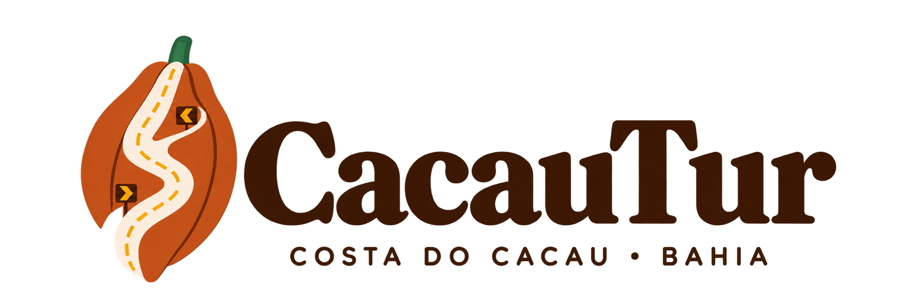
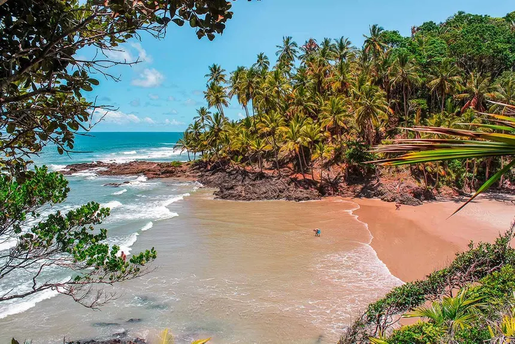
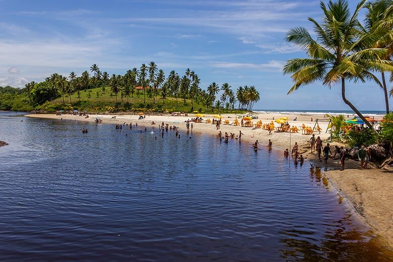
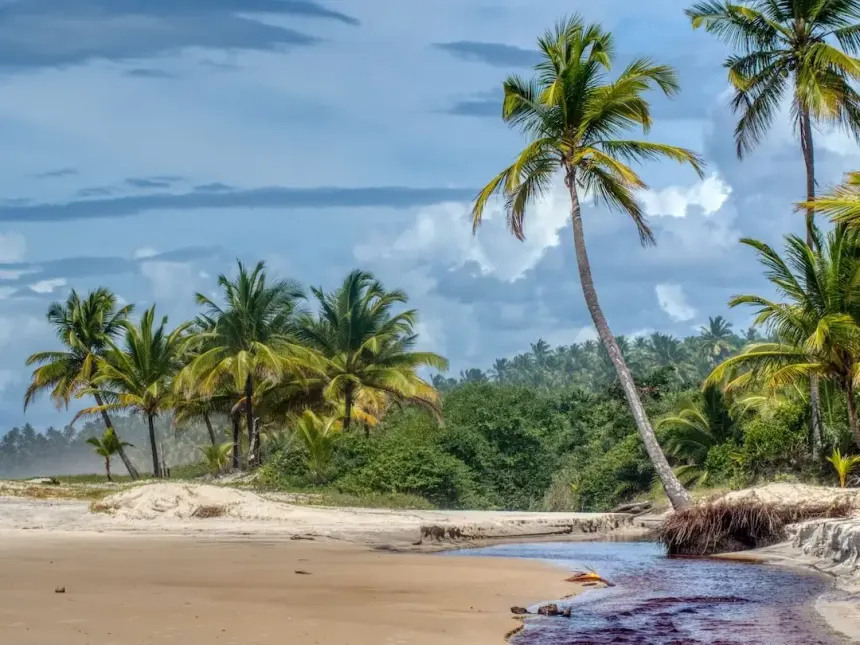
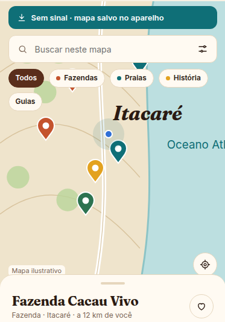
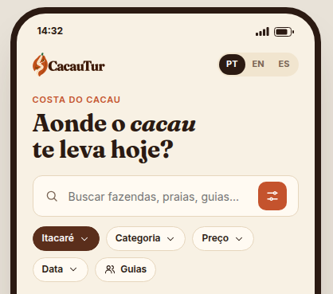
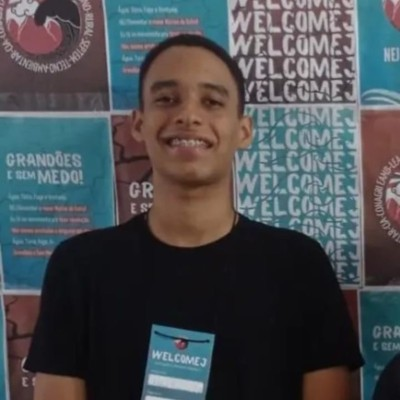
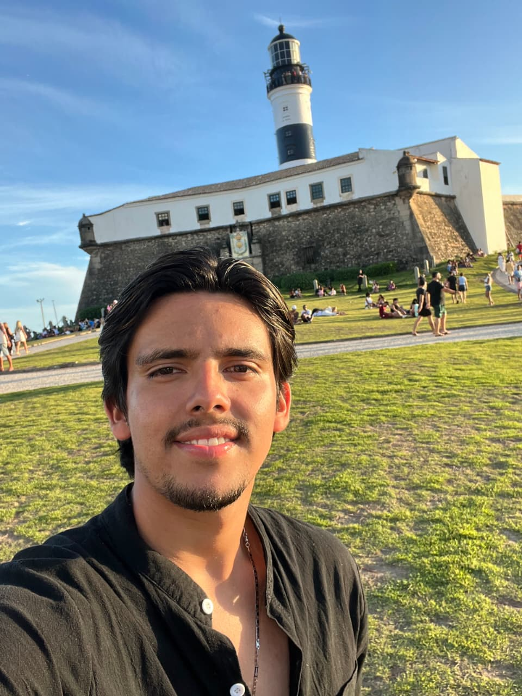

Informação dispersa
O visitante busca em vários lugares para encontrar experiências e planejar o percurso.

A experiência de quem visita pode ajudar a construir destinos melhores. O CacauTur conecta turistas, negócios locais e gestão pública em uma só jornada.



A Costa do Cacau reúne natureza, cultura e saberes únicos. Mas as informações sobre quem visita, o que procura e como avalia cada experiência ainda podem estar espalhadas ou difíceis de transformar em ação.
Sem uma visão integrada, fica mais difícil dar visibilidade aos atrativos, perceber problemas de sinalização e priorizar melhorias com base na experiência real do visitante.
O visitante busca em vários lugares para encontrar experiências e planejar o percurso.
Avaliações e relatos podem se perder sem um caminho claro até quem cuida do destino.
Gestores precisam de dados organizados para entender necessidades e acompanhar prioridades.
Do primeiro roteiro ao relatório de gestão, cada interação pode contribuir para uma leitura melhor do turismo local.
Atrativos, experiências e roteiros ganham um ponto de encontro digital.
Preferências, avaliações e relatos ajudam a revelar a experiência no território.
Indicadores e ocorrências organizados apoiam o planejamento de melhorias.

Uma visão do turismo local para acompanhar indicadores, ocorrências e relatórios da gestão.
Acessar aplicação web↗ Abre em uma nova aba
Conheça a experiência digital para descobrir a Costa do Cacau.
Abrir protótipo ↗Uma experiência que roda na web para descobrir atrativos, explorar roteiros e participar.
Demonstração disponível em breveOs links de acesso serão adicionados assim que as demonstrações web e mobile estiverem disponíveis.
Queremos aproximar quem vive o destino de quem o visita, transformando informação em cuidado, colaboração e desenvolvimento local.
Construa esse futuro com a gente ↗Conectar pessoas, experiências e gestão pública para fortalecer um turismo mais informado e conectado à realidade local.
Contribuir para destinos onde boas experiências e boas decisões caminham juntas.
Pertencimento, colaboração, transparência, valorização local e cuidado com os dados.
O CacauTur cresce com quem conhece, recebe, visita e cuida da Costa do Cacau.
Informação e roteiros para descobrir experiências com mais facilidade.
Mais visibilidade e um caminho de contato com visitantes interessados.
Indicadores e relatos para apoiar o acompanhamento do destino.
Um time com competências complementares em tecnologia, segurança, gestão e relações internacionais.
CEO
Engenheiro de software

CTO
Desenvolvedor full-stack
CISO
Analista de cibersegurança e infraestrutura
CFO
Desenvolvedor full-stack

CMO
Relações internacionais
Conheça as aplicações e veja como a experiência do visitante pode ajudar a gestão a entender melhor o destino.
Conhecer web e mobile ↑